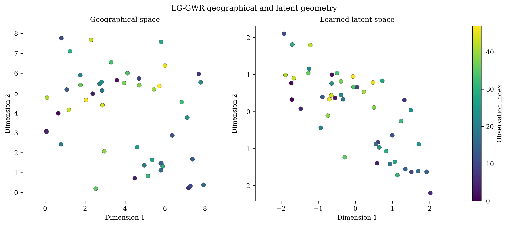
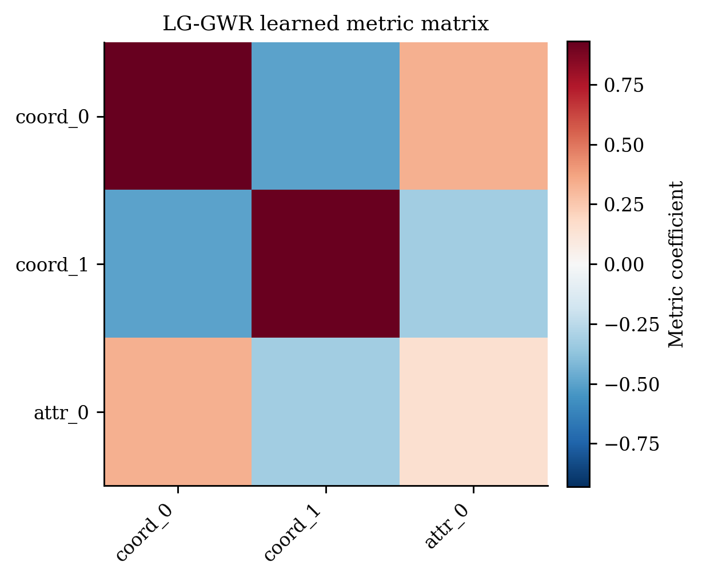
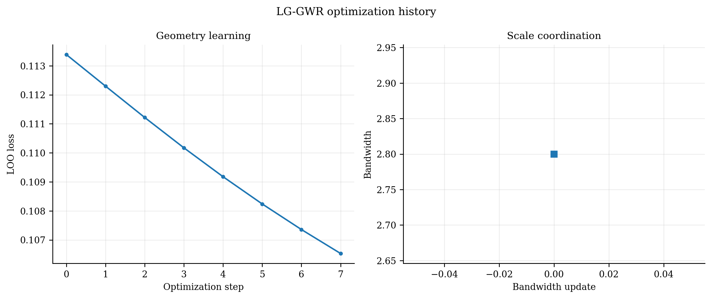
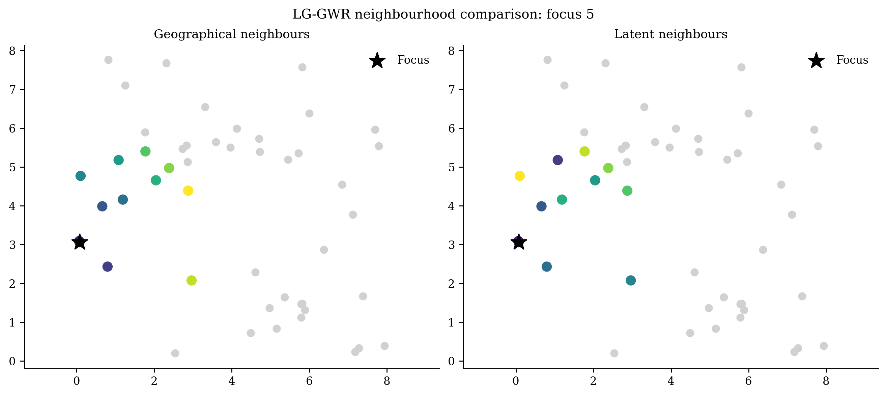

LG-GWR 完整算法专论：学习一张比地图更接近机制的“新地图”¶
模型名称： Latent-Geometry Geographically Weighted Regression 中文名： 潜在几何地理加权回归 性质： pyGWRx 原创研究模型；当前实现经过解析梯度、退化关系、预测、序列化和回归测试，但仍应视作需要进一步外部复现的新方法。
序章：地图为什么可能给错“邻居”¶
想象两座城市。它们在地图上相距一千公里，却拥有相似的人口年龄结构、产业组成、气候条件和交通体系；另有两个相邻城区，一边是高密度商业中心，另一边是低密度工业区。传统 GWR 会天然信任第二对，因为地图距离小；它会天然忽视第一对，因为地图距离大。
问题不是 GWR 的局部回归错了，而是它使用的“邻近”定义可能不适合过程。Tobler 第一定律强调近者更相关，但“近”可以是物理距离，也可能是功能、社会、环境或结构意义上的接近。SGWR 用手工构造的属性相似性补充地理距离；神经网络方法可以学习复杂权重，却降低了解释性。LG-GWR 的出发点是寻找中间道路：让模型学习邻近几何，但把学习限制在线性、可检查、可退化的度量空间中。
这可以被讲成一个“重新绘制地图”的故事：原始地图只画经纬度；LG-GWR 把每个地区的属性也作为坐标维度，然后学习一张新地图。在新地图上，真正由同一机制控制的地区靠近，不同机制的地区分开。局部回归本身仍然是熟悉的 WLS，创新集中在“用什么距离决定谁参与局部回归”。
1. 从 GWR 到可学习几何¶
标准 GWR 在位置 \(s_i\) 使用地理距离 \(\|s_i-s_j\|\)：
LG-GWR 将坐标和属性堆叠：
其中 \(a_i\) 是用于定义上下文的属性。学习矩阵
把输入映射到 \(k\) 维潜在位置：
于是距离成为
权重仍可用 Gaussian、bisquare 或 exponential：
如果 \(A\) 只选择原始坐标、忽略属性列，LG-GWR 就回到普通 GWR。因此它不是完全抛弃地理，而是把地理作为一个可被保留、旋转、缩放或与属性组合的候选几何。
2. 为什么不能直接最小化训练残差¶
若在学习 \(A\) 时允许每个点用自身参与局部回归，模型存在危险的退化路径：把所有点在潜在空间中推得很远，使每个点几乎只给自己权重，从而接近插值训练响应。训练误差可以非常小，但对新位置没有意义。
LG-GWR 因此使用留一目标。对焦点 \(i\)，设置
定义
训练目标为
当前默认采用固定尺度约束，因此不再把一个在约束面上恒定的 \(\lambda\|A\|_F^2\) 伪装成有效正则；只有关闭尺度约束时，lambda_reg 才具有普通 L2 惩罚意义。
3. 解析梯度：让“新地图”真正被数据学习¶
定义局部灵敏度
以及样本 \(j\) 在焦点 \(i\) 的局部模型下的残差
加权最小二乘对单个权重的导数为
令 \(\delta_{ij}=u_i-u_j\)，则
链式法则给出
三类核的稳定闭式为：
最后一个式子在 \(d\to0\) 时需要数值保护。当前源码的解析梯度已逐元素与中心有限差分核对；这是模型可信度的关键，因为旧原型曾使用不能真正学习的随机占位梯度。
4. 尺度不可识别：为什么必须约束 \(A\)¶
对任意常数 \(c>0\)，把 \(A\) 乘以 \(c\)、同时把带宽 \(h\) 乘以 \(c\)，核中的比值 \(d/h\) 不变：
因此 \(A\) 的整体尺度和带宽不能同时被唯一识别。朴素梯度下降可能不断放大 \(A\)，让优化数值不稳定。当前实现提供：
scale_constraint='frobenius'：每步投影回初始 Frobenius 范数；只学习几何形状；scale_constraint='orthogonal'：通过 SVD 投影到正交行空间；scale_constraint='none'：允许尺度学习，此时才可用 L2 惩罚控制。
Frobenius 投影为
优化还使用 Adam、全局梯度裁剪、最佳状态保留、早停和非有限数值终止。
5. 初始化、多重重启与几何—带宽交替¶
潜在几何问题非凸，初值会影响局部最优。当前实现支持：
- coordinate：从标准地理坐标映射开始，是安全且可解释的默认；
- PCA：以坐标与属性联合数据的主方向初始化；
- random：随机初始化，用于探索不同几何。
n_restarts 可运行多个确定性种子并保留最低 LOO 损失解。带宽与几何相互依赖，因此 bandwidth_updates 可执行：
每次带宽以最终自权重拟合的 AICc 选择。这样比“用一个临时带宽学完 A，再完全换带宽”更一致，但也更耗时。
6. Joint 与 Separable 两种几何¶
6.1 Joint：一张统一的新地图¶
所有坐标与属性进入同一个 \(A\)：
优点是可以学习坐标—属性交叉方向；缺点是地理与属性共用一个带宽，纯地理数据中无关属性可能增加噪声。
6.2 Separable：地理地图 × 属性地图¶
地理空间保持原样，只学习属性映射 \(B\)：
当 \(h_a\to\infty\)，第二项趋于 1：
模型精确退化为 GWR。这一“可关闭属性通道”是重要安全设计：当属性没有提供信息时，模型有理论上的地理回退路径。
7. 如何解释学到的几何¶
矩阵 \(A\) 本身并不唯一。若 \(Q\) 是正交矩阵，\(QA\) 产生同样的欧氏距离：
因此不能把 \(A\) 某一个元素直接称为唯一变量贡献。更稳健的解释对象是
因为
- \(M_{kk}\)：输入维度 \(k\) 的度量强度；
- \(M_{k\ell}\)：两个输入维度的交叉方向；
- 对角线归一化可作为描述性贡献，但不是因果重要性；
- 需要结合潜在邻域变化和留出性能解释。


8. 最终拟合、帽子矩阵与预测¶
训练 \(A\) 使用 LOO；最终上报系数则使用标准自权重局部 WLS，以便与 GWR 诊断兼容。设最终权重为 \(W_i\)：
帽子矩阵第 \(i\) 行为
由此计算
以及 AIC/AICc、方差和局部标准误。新位置预测不是查找最近训练系数，而是先按训练尺度标准化其几何输入，映射到潜在空间，然后对训练数据重新做局部 WLS。若局部系统病态，求解器按直接解 → 小岭 → 伪逆进行确定性回退。
9. 创新点的完整叙事¶
LG-GWR 的创新不是“再加一个变量”，而是改变了局部模型最根本的先验：
- 从固定地图几何到数据学习几何。 GWR 默认欧氏地理距离就是机制距离；LG-GWR把这个假设变成可检验、可学习的对象。
- 保持可解释性。 它不是黑箱神经权重，而是线性 Mahalanobis 型度量，可通过 \(A^\top A\)、潜在坐标和邻域变化检查。
- 用 LOO 阻断自插值退化。 几何学习直接以泛化目标约束，而非仅拟合训练值。
- 解析梯度而非数值/占位梯度。 使模型真正可优化、可验证，并提供明确数学贡献。
- 尺度识别与稳定化。 明确处理 \(A\)—带宽耦合，避免无限放大和邻域塌缩。
- 安全退化。 joint 可恢复坐标映射；separable 在属性带宽无限大时精确回到 GWR。
- 区分“地图上的远”与“机制上的近”。 这为跨区域类比、功能城市网络和环境背景相似过程提供了一种局部线性表达。
10. 何时它会成功，何时不会¶
更可能成功： 系数变化由可观测属性背景驱动；地理距离与机制距离明显错位；属性维度不高且经过合理标准化；样本足以支持留一局部回归。
可能失败： 非平稳完全由地理坐标平滑驱动；属性是噪声或存在泄漏；真实几何高度非线性；样本较小、维度较高；带宽和映射存在多个近似等价解。
项目验证显示，它在属性驱动合成数据上显著优于 GWR，在坐标驱动情形与 GWR 接近；但 Dublin、Georgia 等留出实验不保证提升。因此正确结论是“适应非平稳来源”，而不是“普遍优于 GWR”。


11. 论文写作建议¶
论文中应把贡献拆成：问题定义、潜在度量模型、LOO 目标、解析梯度、稳定化、separable 退化、实验验证。必须报告：初始化、随机种子、标准化、潜在维数、核、工作与最终带宽、重启次数、收敛曲线、有限差分误差、退化测试、空间分块留出结果及失败案例。
12. 当前实现边界与后续研究¶
- 当前训练约为 \(O(n^2)\)，可研究近邻稀疏化、低秩距离或 mini-batch LOO；
- 线性 \(A\) 可扩展为低复杂度非线性映射，但必须保留可解释度量或单调约束；
- 可研究每个系数独立潜在几何，形成 multiscale latent GWR；
- 可将响应无关的自监督几何与响应驱动几何分开，降低过拟合；
- 可对 \(M\) 做稀疏、分组或结构化正则；
- 需要更多真实数据、外部代码复现和正式统计理论。
13. 相关方法位置¶
- GWR：固定地理几何；
- SGWR：手工地理权重与手工属性相似性凸组合；
- SGWR-GD：增加属性带宽并优化参数；
- GWANN/GNNWR：用神经网络学习非线性权重；
- LG-GWR：学习紧凑线性几何，保持局部 WLS 与度量可解释性。
14. 主要参考¶
- Brunsdon et al. (1996), GWR
- Lessani & Li (2024), SGWR
- Yu et al. (2025), SGWR-GD
- Hagenauer & Helbich (2022), GWANN
15. 当前主要参数及其研究含义¶
| 参数 | 含义 | 对模型的影响 | 推荐报告方式 |
|---|---|---|---|
latent_dim |
潜在空间维数 \(k\) | 太小可能欠拟合几何，太大增加自由度和局部距离噪声 | 候选值、选择依据、敏感性 |
geometry |
joint 或 separable |
决定坐标与属性共用映射，还是地理核与属性核相乘 | 明确写入方法名 |
bandwidth |
潜在/地理局部尺度 | 小带宽提高局部性也提高方差 | 初始值、最终值、AICc 曲线 |
kernel |
Gaussian/bisquare/exponential | 决定距离衰减与紧支撑 | 公式和选择理由 |
learning_rate |
Adam 步长 | 过大震荡，过小收敛慢 | 与迭代数一起报告 |
max_iter、patience |
迭代与早停 | 控制优化预算 | 实际 n_iter_、停止原因 |
grad_clip |
梯度范数阈值 | 抑制病态局部系统造成的梯度爆炸 | 是否触发可作为诊断 |
standardize_geometry |
几何输入标准化 | 防止米、经纬度和属性量纲支配距离 | 默认开启，保存训练尺度 |
initialization |
coordinate/PCA/random | 决定非凸优化起点 | 至少以 coordinate 为基线 |
n_restarts |
多重重启 | 降低偶然局部最优 | 报告各次 LOO 损失 |
scale_constraint |
frobenius/orthogonal/none | 处理映射—带宽尺度不可识别 | 必须与 lambda_reg 联合说明 |
bandwidth_updates |
几何—带宽交替轮数 | 增强目标一致性，增加计算 | 报告历史序列 |
16. 伪代码¶
Input: X, y, coordinates S, context attributes C
Standardize S and C with training-only statistics
U <- concatenate(S, C)
for restart = 1..R:
initialize A (coordinate / PCA / random)
fix target scale ||A||_F
resolve working bandwidth h
for outer = 1..bandwidth_updates:
for iteration = 1..max_iter:
Z <- U A^T
compute pairwise latent distances D
W <- K(D / h); set diagonal(W)=0
for each location i:
solve leave-one-out local WLS
store residual r_i and sensitivity terms
compute analytical dL/dA
Adam update + gradient clipping
project A to identified scale
retain best finite A; early stop on stagnation
choose reporting h by AICc on the learned geometry
retain restart with minimum LOO loss
fit final self-weighted local models
compute S, ENP, AICc, standard errors and M=A^T A
17. 计算复杂度与内存¶
在稠密实现中，潜在距离和权重矩阵为 \(n\times n\)，单次前向需要至少 \(O(n^2)\) 距离/权重计算；每个位置还要求解 \(p_x\times p_x\) 的局部系统。粗略复杂度可写为
其中 \(T\) 是迭代数，\(R\) 是重启数。内存主要是 \(O(n^2)\)。这解释了为什么当前方法更适合中等样本研究和方法验证。未来可用稀疏近邻、分块距离、近似核或低秩度量降低成本。
18. 当前源码输出与解释¶
典型拟合后属性包括：
A_/B_：joint 或 separable 学习矩阵；latent_coords_：训练样本潜在位置；metric_matrix_：\(A^\top A\) 或 \(B^\top B\)；metric_contributions_：度量对角线的描述性贡献；loss_history_、best_loss_、final_loo_loss_；bandwidth_history_、最终空间/属性带宽；local_parameters_、fitted_values_、residuals_；hat_matrix_和 GWR 式诊断；converged_、stop_reason_、n_iter_。
解释时应优先使用潜在邻域、\(M\) 和留出表现，不应把矩阵某一元素直接称作“因果贡献”。
19. 当前验证证据¶
19.1 数值与工程测试¶
当前项目专用测试为 21 passed，覆盖解析梯度有限差分、坐标单位和属性仿射变换、截距、DataFrame 列顺序、joint/separable 退化、重启复现、序列化、失败状态清理和预测。
19.2 合成留出实验¶
| 情景 | OLS \(R^2\) | GWR \(R^2\) | LG-GWR \(R^2\) |
|---|---|---|---|
| 属性驱动 | 0.6663 | 0.6632 | 0.9833 |
| 坐标驱动 | 0.5830 | 0.9715 | 0.9862 |
该结果支持“模型能适应非平稳来源”的机制主张：属性驱动时地理 GWR 失去优势，LG-GWR 学习上下文几何；坐标驱动时它保留地理基线。
19.3 负面留出结果¶
| 数据集 | OLS \(R^2\) | GWR \(R^2\) | LG-GWR \(R^2\) |
|---|---|---|---|
| Dublin | 0.6101 | 0.6270 | 0.5853 |
| Georgia | 0.3884 | 0.5428 | 0.0816 |
这些结果必须保留，因为它们否定“LG-GWR 普遍提升”的宣传。真实数据中，属性几何可能不稳定、样本不足或非平稳来源与候选属性不一致。
20. 最小代码示例¶
from pygwrx import LGGWR
model = LGGWR(
latent_dim=2,
geometry="joint",
kernel="gaussian",
initialization="coordinate",
standardize_geometry=True,
n_restarts=3,
scale_constraint="frobenius",
bandwidth_updates=2,
random_state=42,
)
model.fit(X, y, coords, attributes=context)
pred = model.predict_result(X_new, coords_new, attributes=context_new)
metric = model.metric_matrix_
对论文实验，应保存随机种子、数据划分、所有缩放统计量、每次重启损失、最终映射、带宽历史和图件。
21. 一段适合论文引言的“创新故事”¶
传统 GWR 把地图视为固定的邻近结构，但现实中的空间过程常沿社会经济、环境或功能联系传播。LG-GWR 将“邻近性”从预设条件变成可学习对象：它在坐标与属性构成的输入上学习一个紧凑线性几何，并在该几何中执行标准局部回归。留一目标阻止通过自插值伪造拟合提升；解析梯度使几何学习可验证；尺度投影解决映射与带宽的不可识别；可分离形式又提供精确回到 GWR 的安全路径。因此，该模型的贡献不是用更复杂的回归替代 GWR，而是为 GWR 学习一张更符合过程的地图。